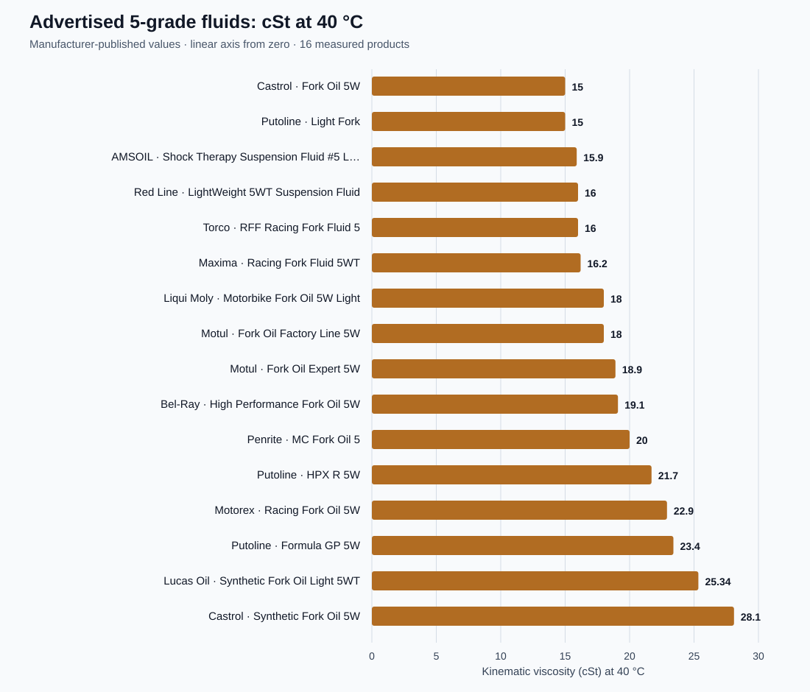

A bottle marked “5W” tells you what the manufacturer calls that fluid. It does not guarantee the same measured viscosity as another brand’s “5W”. If you want a repeatable damping baseline, compare published viscosity at a stated temperature, record the exact product, and consider the complete fluid specification.
Our reference workbook collects 117 named motorcycle suspension-fluid entries from 23 brands and keeps measured, nominal and unverified information visibly separate. The comparison below uses the 17 advertised 5-grade fluids in that workbook for which a manufacturer-published value at 40 °C is available. It is a selected market reference, not a claim to list every suspension fluid sold worldwide.
Download the full suspension-fluid workbook
Excel format · 14 worksheets · 117 entries. Browse fluids ordered by viscosity at 40 °C, viscosity at 100 °C, viscosity index and advertised grade. The workbook also includes a 5-grade comparison, source links, a match finder, a blend estimator and estimated temperature curves.
Download Excel file (.xlsx)Approx. 1.7 MB. Excel or a compatible spreadsheet app is required; mobile browsers may save the file to Downloads or Files.
Advertised 5-grade fluids on one measured scale
Kinematic viscosity is measured in centistokes (cSt). A higher cSt number at the same temperature means a thicker fluid in this measurement. The graph uses a linear axis starting at zero, so the lengths reflect the actual 40 °C values. All plotted figures come from the cited product information in the workbook; Fuchs RSF 5 is omitted from this plot because its 22 cSt figure is an ISO VG nominal classification rather than a published test value.

The measured endpoints are Castrol Fork Oil 5W and Putoline Light Fork at 15.0 cSt, and Castrol Synthetic Fork Oil 5W at 28.1 cSt. That is an 87% increase from 15.0 cSt to 28.1 cSt. The two Castrol products are distinct formulations; treating them as one “Castrol 5W” would hide an important difference.
| Product | cSt at 40 °C | cSt at 100 °C | VI |
|---|---|---|---|
| Putoline Light Fork | 15.0 | 3.40 | 101 |
| Castrol Fork Oil 5W | 15.0 | 3.74 | 150 |
| Red Line LightWeight 5WT | 16.0 | 8.00 | 560 |
| Maxima Racing Fork Fluid 5WT | 16.2 | 4.40 | 201 |
| Motul Fork Oil Factory Line 5W | 18.0 | 4.00 | 121 |
| Bel-Ray High Performance Fork Oil 5W | 19.1 | 4.03 | 108 |
| Motorex Racing Fork Oil 5W | 22.9 | 6.80 | >250 |
| Castrol Synthetic Fork Oil 5W | 28.1 | 5.70 | 150 |
The table is deliberately a subset. The workbook carries the remaining products, exact names, applications, status labels and links to source documents. Motorex publishes VI as greater than 250, so it must not be plotted or sorted as an exact VI of 250.
What 40 °C and 100 °C numbers tell us
Viscosity changes with temperature. Reporting cSt at 40 °C and 100 °C gives two standard reference points for comparing the shape of that change. Neither point is guaranteed to be your fork’s operating temperature. A cold morning, slow technical riding and sustained high-speed work can place the oil in quite different thermal conditions, and the temperature inside a working damper is not uniform.
The 40 °C value is useful for ranking fluids at one shared reference temperature. The 100 °C value helps show whether two products that match at 40 °C diverge as temperature rises. For example, Red Line LightWeight 5WT and Torco RFF 5 both list 16.0 cSt at 40 °C, while their published 100 °C values are 8.00 and 5.05 cSt respectively. That difference is precisely why a single “weight” label, or even one cSt value, is an incomplete description.
Viscosity index is useful, but it is not a quality score
Viscosity index (VI) describes the relative change in kinematic viscosity between the standard 40 °C and 100 °C measurements. In general, a higher VI indicates a smaller relative viscosity change across that reference interval. It does not tell you that a fluid is universally “better”, that it produces a certain damping curve, or that it is compatible with every fork or shock.
A damping system responds to fluid viscosity alongside orifice geometry, shim deflection, pressure, temperature, aeration and other flow-path effects. Additive chemistry, foam behaviour, friction characteristics, seal compatibility and the equipment maker’s requirements also matter. A high-VI fluid can be an appropriate choice for temperature consistency, but the correct starting point is the specified fluid and a repeatable baseline for the particular component.
Why changing fluid can change damping
In a narrow laminar passage, resistance to flow is strongly related to dynamic viscosity. In a valve with turbulent or transitioning flow, the relationship differs, and the shims can change the available area as pressure rises. Thus a difference in cSt is a reason to expect possible damping differences, not a formula for an exact percentage change in clicker response or force. Forks with significant bleed flow can be especially sensitive at some piston speeds, while the valve layout determines where that sensitivity shows up.
Before substituting, check the machine’s service information, the cartridge or damper maker’s instructions, and whether the fluid is intended for a fork, shock or both. Record the product name, fill quantity or oil height, settings and test conditions. Make one controlled change at a time. Oil height mainly changes the air-spring progression near the end of travel; it is a separate adjustment from fluid viscosity.
How to use the workbook
- Identify the exact product, including formulation and advertised grade. Similar labels within the same brand can have very different values.
- Use cSt 40 Order to compare measured viscosity at a common temperature. Check cSt 100 Order and VI Order before drawing conclusions about temperature response.
- Open Master Database and Method & Sources to see the status and manufacturer source for a figure. An empty measurement is unknown, not zero.
- Use Match Finder, Blend Calculator and Temperature Curves as screening tools. Calculated blend and intermediate-temperature values are estimates, not product certifications or bench measurements.
Method and limitations
This snapshot was compiled on 22 September 2026 from publicly accessible manufacturer product and technical information, with one manufacturer technical sheet hosted by an authorised distributor. It includes fork, shock and dual-use fluids, plus some OEM entries where public measurements were unavailable. The plots use only numeric manufacturer-published 40 °C data for products advertised as grade 5; an ISO VG nominal value is excluded. Product names and ranges reflect the sources available at compilation, and the catalog is not exhaustive.
The workbook’s temperature curves are mathematical estimates between published 40 °C and 100 °C points, not additional laboratory results; accuracy outside that interval is less certain. VI is treated according to the published figure, including inequalities. The workbook’s match and blend sheets support comparison, but they do not establish seal compatibility, additive compatibility, foaming performance or suitability under an OEM warranty.
Source trail
Every product row links to its source in the workbook. A few examples used above are the Red Line product data, AMSOIL technical bulletin, Castrol fork oil data sheet and Putoline Light Fork product data. Use the workbook’s row-level links to check the complete set and source date.
Practical conclusion: choose by exact fluid and documented properties, then verify performance on the bike. “5W” is a label; cSt at a common temperature is a measurement; VI adds temperature context. None of those alone replaces a proper suspension setup.